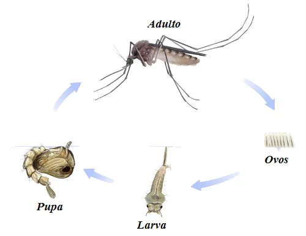

Mosquito Aedes aegypti
O Aedes aegypti é um mosquito pequeno, de hábitos urbanos e domésticos, reconhecido como o principal vetor de arboviroses de grande impacto na saúde pública, como Dengue, Chikungunya, Zika e Febre Amarela Urbana. Seu controle é uma responsabilidade coletiva, pois ele se reproduz em recipientes com água parada dentro e ao redor das residências.
Características e Hábitos do Mosquito

Fêmea Sanguessuga
Apenas a fêmea pica e transmite os vírus. Ela precisa de sangue humano (hematofagia) como fonte de proteína para o amadurecimento e produção de seus ovos, um processo que ela repete a cada 3-4 dias. O macho se alimenta de néctar e sucos vegetais.
Atividade Diurna
Seus hábitos são preferencialmente diurnos, com maior atividade e risco de picadas no início da manhã e ao entardecer. No entanto, ele pode picar em outros momentos, inclusive à noite, em ambientes bem iluminados. Ele costuma voar baixo e prefere locais sombreados e com pouca circulação de ar dentro de casa, como atrás de cortinas ou embaixo de móveis.
Origem e Distribuição
Originário da África, o nome aegypti significa "odioso do Egito". Ele se espalhou por regiões tropicais e subtropicais do mundo e foi introduzido nas Américas durante o período colonial.
Ciclo de vida e reprodução
O ciclo de vida do Aedes aegypti se desenvolve em quatro fases: ovo, larva, pupa e adulto. Em condições ideais de clima (temperaturas elevadas e chuvas), ele se completa em uma média de 7 a 10 dias. Os adultos vivem de 4 a 6 semanas.
Ovos Extremamente Resistentes
A fêmea deposita de 100 a 150 ovos por vez nas paredes dos recipientes, milímetros acima da linha d'água, e não na água diretamente. Os ovos são incrivelmente resistentes e podem sobreviver secos por meses ou até mais de um ano, esperando apenas o contato com a água para eclodir.
Criadouros
O mosquito prefere depositar seus ovos in água limpa e parada, principalmente em recipientes artificiais e domésticos, conhecidos como criadouros. Os mais comuns incluem caixas d'água descobertas, latas, pneus, garrafas vazias, calhas entupidas e pratos sob vasos de plantas.
Transmissão Vertical
Se a fêmea estiver infectada, ela pode passar o vírus para seus ovos (transmissão vertical), o que significa que o mosquito que nascer dessa cria já pode nascer infectado e apto a transmitir a doença.